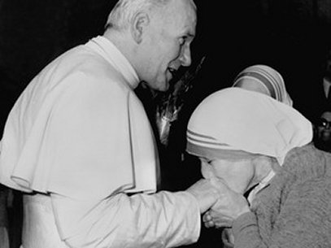
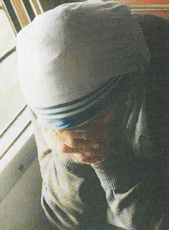

“SIMPLICIDADE A SERVIÇO DE DEUS”
UM PROTETOR DOS LEPROSOS
Por ocasião de uma Santa Missa
matinal na Capela Pontifícia no Vaticano, Madre Teresa foi convidada e estava
presente, participando da cerimônia. Logo após a 
Mas o Santo Padre já conhecendo bem a Madre Teresa mandou que ela procurasse o Cardeal Pietro Palazzini, que era o Prefeito da Congregação para a Causa dos Santos. Ela foi. O Cardeal, sempre amável, mostrou uma série de dificuldades oficiais e verdadeiras, que se constituíam numa tradição de 400 anos a ser seguida como passos normais para a Canonização. E então, respeitosamente e com um fraterno olhar, sugeriu: “Madre Teresa, a senhora tem todo o direito de solicitar e tem toda a razão, ao mencionar passagens da Sagrada Escritura. Mas não acha que seria muito mais fácil pedir ao Bom DEUS um milagre pela intercessão do Padre Damião, do que nós agora, mudarmos a nossa tradição de quatrocentos anos?” Madre Teresa abaixou os olhos e depois disse: “Sim Cardeal, rezemos então!”
O milagre desejado por Madre Teresa maravilhosamente aconteceu pouco tempo depois. O processo foi aberto, discutido e comprovado e Padre Damião de Veuster (1840-1889), que trabalhou na Ilha Molokai com os leprosos e que, após quatro anos de grande sofrimento, morreu da doença, foi Beatificado pelo Papa João Paulo II em 4 de Junho de 1995. Madre Teresa ficou felicíssima, por que assim verdadeiramente tinha um Santo para os seus leprosos. A Canonização do missionário belga foi concretizada pelo Papa Bento XVI. Em 11 de Outubro de 2009, na Praça de São Pedro, em Roma.
LUGAR DE PAZ
É fácil explicar por que Madre Teresa dava tanta importância a um “Santo” para os leprosos. É uma doença terrível. Desde a antiguidade os leprosos eram segregados pela sociedade, até mesmo pelos próprios familiares. Eram marginalizados vivendo fora das povoações, para evitar o contágio. E ainda mais, tem que se considerar que na Índia, era onde havia mais leprosos. Ela lutou com bravura. Em 1957 acolheu os primeiros doentes com sinais de hanseníase. E então fez com que as Irmãs tivessem uma formação apropriada para o tratamento da doença. E assim, ela fundou postos moveis para cuidar dos doentes e também Centros fixos para os casos mais graves de lepra. E com todo esforço, com a ajuda do Papa Paulo VI e do povo indiano, em 1959 fundou um grande centro para tratamento dos leprosos, a 300 quilômetros de Calcutá, onde os leprosos enfermos, orientados pelas Irmãs Missionárias da Caridade, trabalhavam em oficinas, criavam galinhas, tinham uma grande horta, para a sustentação própria. Este admirável Centro recebeu o nome: “Shanti Nagar”(que significa: Lugar de Paz)
Padre Leo conta uma experiência interessante. Certa vez, quando ele e Madre Teresa se aproximavam da estação de Shanti Nagar, após uma viagem de trem de várias horas, cresceu no interior dele um sentimento insidioso. E ele se perguntava: “Como iria reagir numa aldeia cheia de leprosos?” Então ele comentou com Madre Teresa que estava um pouco nervoso, sentindo-se inquieto e que até tinha medo de visitar a ala dos leprosos. A resposta da Madre foi: “Padre, lá você vai encontrar JESUS em roupagens horríveis, como o mais pobre dos pobres. A nossa visita há de levar alegria, pois a mais terrível pobreza é a solidão e o sentimento de não ser amado. Hoje em dia, as piores doenças não são a lepra ou a tuberculose, mas a sensação de ser indesejado.” Completou a Madre: “Existe no mundo mais fome de amor e estima do que de pão”.
A ORAÇÃO
Quão importante é a Oração para
Madre Teresa? Sua resposta é simples e clara: “Sem DEUS somos pobres demais para ajudar os pobres. Mas,
se 
Ela junto com Padre Leo no automóvel, num posto de gasolina olhava a mangueira da bomba pela qual a gasolina entrava no tanque e depois disse: “Olhe Padre, isto é como o sangue no corpo: sem sangue não há vida no corpo; sem gasolina o carro não anda. E com o mesmo raciocínio, sem a Oração a Alma morre”.
“A Oração nos dá um coração puro, porque ela purifica o coração. E um coração puro consegue ver DEUS”. (Para a Madre “ver DEUS” era a capacidade de reconhecer a presença de DEUS e da SUA AÇÃO em nossa vida, sentindo a SUA Mão em tudo) A frase central de Madre Teresa, quando se tratava da oração, era a seguinte: “DEUS nos fala no silêncio de nosso coração e nós escutamos. Depois, com o fervor de nosso coração nós falamos a ELE, e ELE nos escuta. Isto é a Oração”.
Na espiritualidade de Madre Teresa, a Oração é a resposta do ser humano ao anseio de DEUS, representado pelo grito de JESUS na Cruz: “Tenho sede!”
Padre Leo escreveu: “Hoje tenho a certeza de conhecer bem o motivo pelo qual eu tinha de acompanhá-la tantas vezes: Madre Teresa precisava de um Padre que celebrasse a Santa Missa todos os dias, para ela e para as Irmãs, e que também pudesse confessá-las”.
Madre Teresa repetia com frequência a frase do Padre Payton, americano e grande apóstolo da Oração Familiar: “Família que reza unida, permanece unida”.
Ela também repetia o Padre Brian: “A Família é um instrumento especial nas Mãos de DEUS, que seus membros foram concebidos para grandes coisas, nomeadamente para amarmos e sermos amados. Uma Família unida cultiva a Paz. E assim, com Paz, serão as nossas boas relações com os nossos vizinhos, com as pessoas da nossa Rua, do Bairro, da nossa cidade e do nosso país”.
CASA MISSIONÁRIA EM VIENA
A instalação da Casa das “Missionárias da Caridade” em Viena ficava numa região onde viviam muitas pessoas pobres. Pouco tempo depois, estavam apinhadas de indigentes sem teto, e as Irmãs tiveram necessidade de procurar uma casa maior. Assim que chegou a Viena, Madre Teresa pediu uma lista de pessoas que poderiam ajudá-la a procurar uma casa. Pegou o telefone e ligou para cada uma delas. Não levou muito tempo até que dois empresários do ramo imobiliário disseram que comprariam uma casa para Madre Teresa e a deixaria à disposição dela, por um dólar ao ano (um aluguel bem simbólico e bem barato). Eles compraram a casa e comunicaram a Madre. A casa se encontrava numa região pouco recomendável e que até pouco tempo antes da venda, era utilizada como bordel. Para decidir se a casa poderia mesmo ser usada pelas Irmãs, Madre Teresa quis vê-la. Assim Padre Leo e Madre Teresa foram visitar a casa. Ainda era um bordel em funcionamento, não tinha sido desativado. Padre Leo pensou: “Será que Madre Teresa vai se recusar a entrar? E como é que ela vai reagir num lugar deste”? Ela entrou normalmente, como entraria em qualquer edifício. Nem reparou os quadros que estavam nas paredes e nem olhava o mobiliário, antes, dizia ao passar pelos quartos:“Então aqui fica a Capela; aqui o Tabernáculo; aqui a Cruz; nesta sala fazemos o refeitório e lá embaixo a cozinha”. Poucos minutos depois ela já tinha decidido tudo. Na saída falou comigo:“Padre, abençoe tudo isto!”
Até hoje essa casa é um abrigo abençoado para mães necessitadas e para muitas pessoas pobres. Todos os dias centenas de sem-teto recebem ali uma refeição.
Dizia Madre Teresa: Os canos conduzem água e tudo o mais, sem reclamar. Nós só temos que ser como os canos, condutores da “misericórdia de DEUS”. Este querer “nada ser” estava sedimentado no coração de Madre Teresa. Ela apenas queria ser “um lápis na Mão de DEUS”, sempre apontado para JESUS. Para Madre Teresa, a própria insignificância era o primeiro passo para a Santidade.
HOMENAGEADA EM SÃO FRANCISCO
Pouco depois de receber o prêmio Nobel, ela foi recebida em São Francisco, na Califórnia, nos Estados Unidos, e homenageada com a entrega da chave simbólica da cidade. Essa homenagem foi transmitida por quase todas as estações radiofônicas locais. Em outra parte da cidade, um jovem envolvido com o trafico de drogas e de armas, dirigia o seu veiculo ouvindo musicas. Quando a transmissão da cerimônia começou, as principais emissoras quiseram e retransmitiu os discursos e os fatos que ocorriam na homenagem a Madre Teresa. O rapaz ficou frustrado porque não encontrava mais um canal com músicas. Então simplesmente decidiu ouvir as palavras até o final da cerimônia. Mas, depois de ouvir Madre Teresa durante uns poucos minutos, mesmo contra a sua vontade pessoal, foi entendendo aqueles argumentos, e raciocinando com sabedoria, começou a chorar. E de forma tão convulsiva que precisou parar o carro no acostamento.
Somente quando a transmissão terminou, é que ele conseguiu seguir viagem. De uma cabine telefônica mais próxima, ligou para uma das estações de rádio para perguntar quem fizera o discurso? Disseram-lhe: “Era Madre Teresa”. Ele procurou e encontrou o endereço da Casa das Irmãs em São Francisco, onde recebeu a indicação de que em Nova York, havia uma Comunidade Masculina da mesma Congregação Missionária da Caridade. E assim, foi ele para Nova York à procura dos Padres Missionários da Caridade, onde fez um retiro; confessou-se depois de muitos anos ausente de JESUS, na Santa Missa, comungou e começou uma vida nova.
AS FORMAS DE POBREZA
Madre Teresa raciocinava: “Quando uma pessoa está só ou abandonada, quando não tem trabalho ou não é desejada, é um tipo de pobreza. Quando a pessoa é excluída e considerada a escória da sociedade, essa é também uma forma de pobreza muito mais difícil de erradicar, do que quando existe simplesmente fome. E esse tipo de pobreza também se encontra nos países mais ricos do mundo”. Por essa razão, Madre Teresa levava as suas Irmãs para muitas grandes cidades ocidentais, como por exemplo: Roma, Londres, Nova York e Viena. Mas não escapava à sua atenção o fato de, além daquelas duas formas de pobrezas mencionadas, também existir uma “terceira forma: a pobreza da alma, que é ainda mais profunda do que a fome e a solidão”. Essa pobreza da alma se encontra nas pessoas sem DEUS, em pessoas que não tem fé e que, muitas vezes, nem ao menos têm a possibilidade de ouvir falar da fé ou de exercê-la livremente.
O ARQUITETO BONDOSO
Padre Leo descreve que certo dia, ele e Madre Teresa fazendo uma escala de avião em Miami, nos Estados Unidos, pernoitaram na Casa das Irmãs. Na porta da Casa estava estacionado um carro com um homem dentro. Madre Teresa entrou e eu o cumprimentei. Ele sorridente me contou a seguinte história: “Disse que era arquiteto e sua esposa conheceu as Irmãs logo que chegaram a Miami. Ela ajudava com bom coração as Irmãs na cozinha, com os pobres e onde fosse necessário. E eu sempre vinha de carro para buscá-la, depois do trabalho. Certo dia..." continuou o Arquiteto: “Uma Irmã idosa e baixinha apareceu junto com minha esposa e me agradeceu efusivamente por consentir que minha esposa ajudasse as Irmãs. Depois me perguntou”:“Qual é mesmo a profissão do senhor?” Respondi: “Trabalho como Arquiteto”. Então ela disse: “Oh, que bom, com certeza o senhor pode me fazer umas fotocópias?” Falou o Arquiteto: “Com muito prazer senhora. O que tenho de fotocopiar?” Era Madre Teresa a Irmã idosa, e lhe apresentou um pequeno cartão de visita onde se lia:
O FRUTO DO SILÊNCIO É A ORAÇÃO;
O FRUTO DA ORAÇÃO É A FÉ.
O FRUTO DA FÉ É O AMOR.
O FRUTO DO AMOR É O SERVIÇO.
O FRUTO DO SERVIÇO É A PAZ.
O Arquiteto falou:“Sim, claro, com muito prazer. De quantas precisa? Dez? Vinte?” Ela respondeu: “Vinte mil, por favor.”
Quando lhe perguntei se as fez, o Arquiteto riu:“Sim, sim, fiz uma boa quantidade delas. E, além disso, desde então, já construí duas casas para Madre Teresa, que eram: um Lar de Idosos e uma Casa para as Irmãs”.
Do pedido de fotocópias nasceu uma forte amizade para o resto da vida. E o simpático e prestativo Arquiteto que andava afastado da religião, acabou por reencontrar a fé cristã.
NA ALEMANHA – SEM DESPERDÍCIO
Certa vez, no norte da Alemanha, a família Kolping entregou um generoso cheque a Madre Teresa para a sua Obra. Como em outras vezes, organizou-se por conta da ocasião, uma grande refeição. Madre Teresa nunca fez questão de tais recepções. Durante o evento, alguém se insurgiu, dizendo que era um absurdo que, no final do banquete, se tivesse de jogar fora tudo o que sobrasse. Madre Teresa ficou muito chocada e quis saber o porquê? Explicaram-lhe que era por causa das normas de higiene. O assunto do desperdício de alimentos tornou-se desde então uma preocupação para a Madre, porque ela lembrou-se que muitos morriam de fome sem ter qualquer coisa para comer.
Uma das companhias aéreas que Madre Teresa viajava era a Pan Am. Lá ela era tratada com muito carinho por todos. Não importava que a passagem dela fosse de classe econômica ou até que ela não tivesse comprado a própria passagem, normalmente eles sempre a colocavam na primeira classe, e lhe garantiam no avião e nos aeroportos, um tratamento VIP, muito especial. E por isso também, ela usava de sinceridade com as aeromoças : “Por favor, não se esqueça de dar o que sobrar para os mais pobres dos pobres quando sairmos”. As moças sempre muito atenciosas não se esqueciam. Conduziam a Madre e seus acompanhantes para a Sala VIP do aeroporto e pelo menos oito sacos com sanduíches e chocolates, cuidadosamente embrulhados e bem acondicionados, eram entregue à Madre Teresa para os pobres. E a Comissária de bordo nem dos talheres de plástico se esquecia.